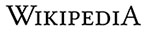

La enciclopedia libre
Español
1 655 000+
artículos
中文
1 172 000+
條目
Deutsch
2 528 000+
Artikel
English
6 235 000+
articles
日本語
1 250 000+
記事
Русский
1 693 000+
статей
Français
2 292 000+
Artikel
Italiano
1 669 000+
voci
Português
1 053 000+
artigos
Polski
1 452 000+
haseł
Leer Wikipedia en tu idioma